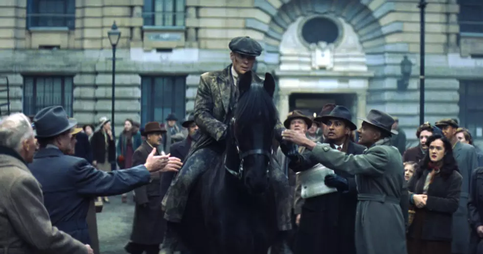

Apesar de tímido, filme de Peaky Blinders dá despedida digna a Tommy Shelby
Cillian Murphy retorna para iniciar uma nova era da franquia

É no mínimo curioso que o filme que marca a despedida de Cillian Murphy como Tommy Shelby venha com o subtítulo O Homem Imortal. De 2013, quando a primeira temporada de Peaky Blinders estreou, até agora, com o filme que encerra a sua participação na franquia, o personagem se tornou um símbolo da cultura pop. Homens contemporâneos copiaram o seu corte de cabelo e trejeitos, colocaram a boina de volta no universo da moda e fizeram com que o termo "frio e calculista" se tornasse quase sinônimo de sua imagem. Treze anos depois de sua primeira aparição, é justo dizer que Tommy se tornou, de fato, imortal.
Talvez seja por isso que sua última aventura pareça um tanto tímida. Quando a série original acabou, Tommy estava se isolando de seu próprio mundo. Cansado das constantes batalhas e perdas, o líder dos Peaky Blinders deixou para trás família, status e poder, convencido de que seu tempo havia acabado. Quando O Homem Imortal começa, seis anos depois do "adeus" de Tommy, ele ainda está em seu exílio, mas é praticamente arrancado dele quando a Segunda Guerra Mundial bate na porta dos Peaky Blinders e da família Shelby, agora liderada por Duke (Barry Keoghan). Para isso acontecer, Tommy precisa encarar - e superar - o seu maior trauma até aqui.
A forma encontrada por Steven Knight, criador da franquia e roteirista do filme, para arrancar Tommy de seu exílio é brutal e chocante. Não que isso seja novidade no mundo dos Peaky Blinders, mas Knight dobra a aposta para que a última aventura de Murphy na pele do Imortal seja, de fato, inesquecível. O problema é que a apoteose aguardada para uma despedida desse nível precisaria de mais recheio para chegar ao ápice em boa forma, e a sensação é de que tentaram encaixar uma história típica de uma temporada de seis episódios em pouco menos de 120 minutos. Com muita frequência, parece uma repetição do material antigo da série.
Dados do Filme:
• Nome do Filme: Peaky Blinders - The Immortal Man
• Ano de Produção: 2026
• Classificação: 16 anos
• Direção: Tom Harper
Este texto foi retirado do site do Omelete: